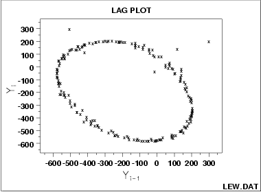

|
1.
Exploratory Data Analysis
1.3. EDA Techniques 1.3.3. Graphical Techniques: Alphabetic 1.3.3.15. Lag Plot
|
|||
| Lag Plot |  | ||
| Conclusions |
We can make the following conclusions based on the above plot.
|
||
| Discussion | In the plot above for lag = 1, note the tight elliptical clustering of points. Processes with a single-cycle sinusoidal model will have such elliptical lag plots. | ||
| Consequences of Ignoring Cyclical Pattern |
If one were to naively assume that the above process came from the
null model
The lag plot is also of value in outlier detection. Note in the above plot that there appears to be 4 points lying off the ellipse. However, in a lag plot, each point in the original data set Y shows up twice in the lag plot--once as Yi and once as Yi-1. Hence the outlier in the upper left at Yi = 300 is the same raw data value that appears on the far right at Yi-1 = 300. Thus (-500,300) and (300,200) are due to the same outlier, namely the 158th data point: 300. The correct value for this 158th point should be approximately -300 and so it appears that a sign got dropped in the data collection. The other two points lying off the ellipse, at roughly (100,100) and at (0,-50), are caused by two faulty data values: the third data point of -15 should be about +125 and the fourth data point of +141 should be about -50, respectively. Hence the 4 apparent lag plot outliers are traceable to 3 actual outliers in the original run sequence: at points 4 (-15), 5 (141) and 158 (300). In retrospect, only one of these (point 158 (= 300)) is an obvious outlier in the run sequence plot. |
||
| Unexpected Value of EDA | Frequently a technique (e.g., the lag plot) is constructed to check one aspect (e.g., randomness) which it does well. Along the way, the technique also highlights some other anomaly of the data (namely, that there are 3 outliers). Such outlier identification and removal is extremely important for detecting irregularities in the data collection system, and also for arriving at a "purified" data set for modeling. The lag plot plays an important role in such outlier identification. | ||
| Recommended Next Step |
When the lag plot indicates a sinusoidal model with possible
outliers, the recommended next steps are:
|
||